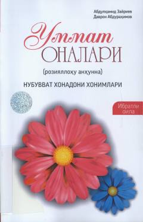

UOPayg'ambarimiz Muhammad sollallohu alayhi vasallamning zavjai mutahharalari hayotiga bag'ishlangan diniy-ma'rifiy asar.
Ushbu kitob Payg'ambarimiz Muhammad sollallohu alayhi vasallamning zavjai mutahharalari, ya'ni mo'minlarning onalari hayoti va ularning islom dini yo'lidagi xizmatlari haqida hikoya qiladi. Asarda nubuvvat xonadoni xonimlarining ibratli hayot yo'li va ularning islom tarixidagi o'rni batafsil yoritilgan.